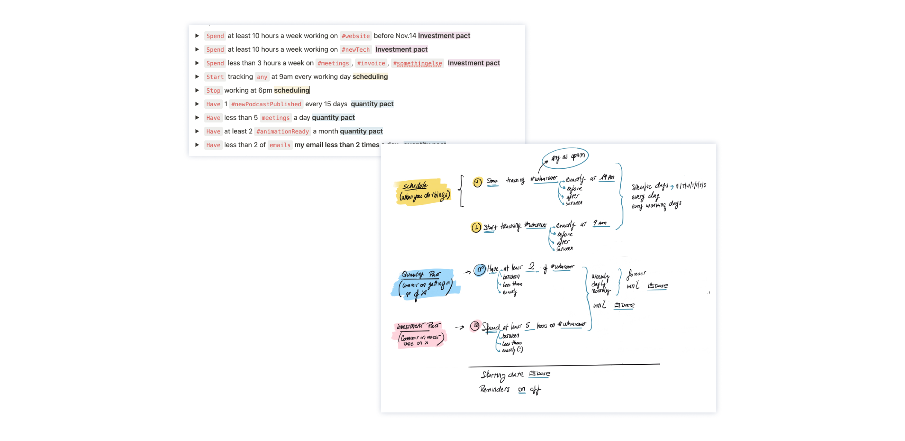
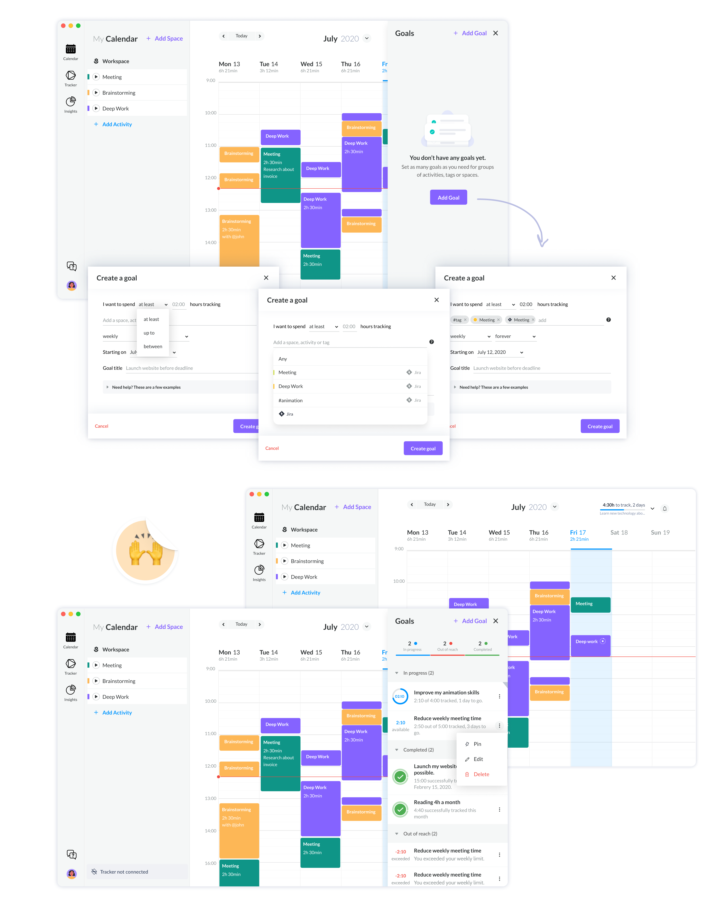
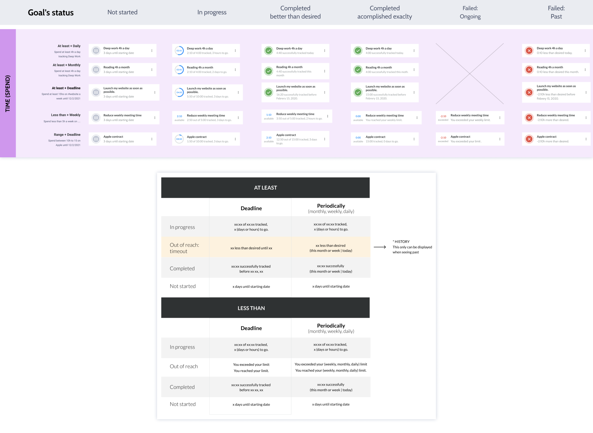

Timeular: meet your goals
Austria 2021
The goal
Timeular is helping people gain valuable insight into how they spend their time and increase productivity.
This new feature is meant to help our users to:
- Clearly set their goals.
- Choose how progress will be measured.
- Accomplish their goals or get insights to help them if not.
Brainstorming
Our initial step was to brainstorm potential and realistic goals to identify different types and their structures.
Through this process, we categorized the goals as follows:
- Goals aimed at scheduling tasks or activities.
- Goals designed to commit to achieving specific outcomes or results.
- Goals focused on dedicating a set number of hours towards a particular activity or endeavor.
By categorizing goals in this manner, users can better understand how to set up their goals with clear outcomes and commitments.
Prototype and user testing
Armed with this valuable insight, I proceeded to develop a comprehensive solution capable of accommodating all potential scenarios. I created an interactive prototype to test with users, beginning with interviews to gain a deeper understanding of their real-life challenges and time-management needs.
During these interviews, I presented users with hypothetical scenarios to gauge their interaction with the prototype's goals feature. Each session concluded with an open discussion, inviting users to provide feedback on their experience and how they perceived the feature's effectiveness. This iterative process ensured that the final solution was both user-centric and optimized for real users needs.

Creating Feature MVP
We opted to roll out the functionality with the essential features required to meet the predominant user need, primarily centered around reaching a specific number of hours. Consequently, we concentrated solely on launching this type of goal initially, aiming to collect feedback and insights into its efficacy and utility with this initial version.
Card Behavior
Depending on the goal's setup and status, the card will display varying information. For instance, if a deadline is set, the goal visualization will appear as a counter; otherwise, users will see a progress bar. Furthermore, the text content will be customized based on each specific scenario.
Mobile App
Finally, this functionality needed to be available on mobile devices as well, so the designs were adapted for the mobile app accordingly.